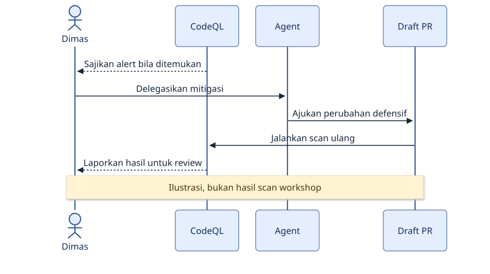
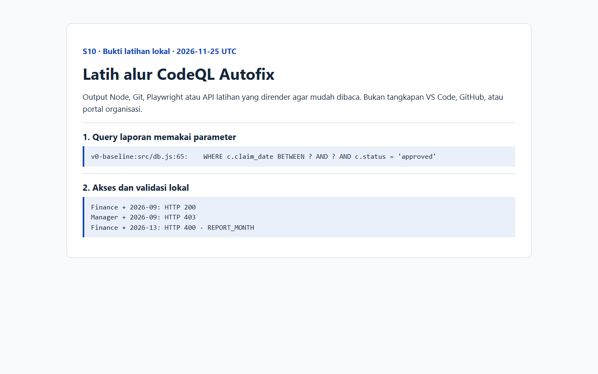
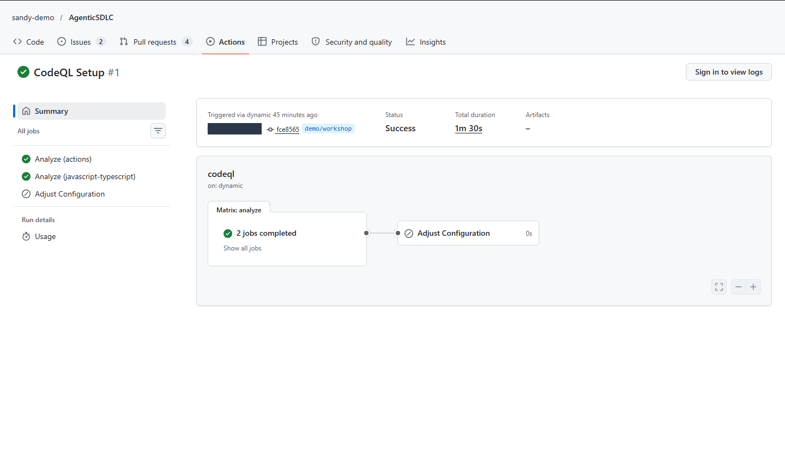

S10 · Level 3 — Tim virtual
Latih alur CodeQL Autofix
Gunakan kartu simulasi untuk alur alert, usulan mitigasi, scan ulang, dan keputusan manusia. Tidak ada celah yang ditanam.
Status latihan: CodeQL aktif · 0 alert terbuka pada pemindaian awal; autofix belum diuji. Ikuti langkah · Cek hasil · Langkah live · Ulangi dari awal.
Masalah yang dihadapi
Daftar alert yang panjang tidak memberi Bima informasi cukup untuk meninjau perbaikan.
Kerugian: Temuan audit berulang jika perbaikan tidak dibuktikan.
Masalah pada baseline
src/db.js
Lihat potongan atau catatan sumber
WHERE c.claim_date BETWEEN ? AND ? AND c.status = 'approved'Solusi dan alur
Gunakan kartu simulasi untuk alur alert, usulan mitigasi, scan ulang, dan keputusan manusia. Tidak ada celah yang ditanam.
Alur kerja ringkas
CodeQL · Pindai source
Hasil: Pemindaian asli berhasil dan melaporkan 0 alert terbuka.
AppSec · Tentukan apakah ada temuan yang bisa ditangani
Hasil: Tidak ada alert untuk Autofix. Uji batas API dan prepared statement tanpa membuat celah.
Reviewer · Cek ulang bila ada perbaikan nyata
Hasil: Bandingkan sebelum/sesudah hanya jika kedua hasil dan alert yang relevan terukur.

- Baca alert bila scanner menemukannya.
- Minta usulan mitigasi tanpa menanam celah.
- Tinjau perubahan defensif dalam draft PR.
- Jalankan scan ulang dan lihat hasilnya.
Lihat sumber Mermaid

sequenceDiagram
actor D as Dimas
participant Q as CodeQL
participant A as Agent
participant P as Draft PR
Q-->>D: Sajikan alert bila ditemukan
D->>A: Delegasikan mitigasi
A->>P: Ajukan perubahan defensif
P->>Q: Jalankan scan ulang
Q-->>D: Laporkan hasil untuk review
Note over D,P: Ilustrasi, bukan hasil scan workshopLangkah demo
Baca mitigasi yang sudah ada
Di src/db.js cari BETWEEN ? AND ?. Periode harus jadi parameter, bukan dirakit menjadi teks SQL. Buka src/routes/reports.js dan cari pemeriksaan peran Finance serta validasi month.
git grep -n "BETWEEN ? AND ?" -- src/db.js
Perbesar S10-local-result.pngOutput lokal yang dirender · bukan layar portal · Output pemeriksaan lokal S10: Query laporan memakai parameter; Akses dan validasi lokal. Uji batas API secara defensif
Mulai npm run demo:before di terminal pertama. Jalankan blok ini di terminal PowerShell kedua untuk membandingkan Finance, Manager, dan bulan tidak valid. Pemilih peran hanya untuk aplikasi fiktif di localhost.
curl.exe -sS -o NUL -w "Finance 2026-09: %{http_code}\n" -H 'x-demo-user: 6' 'http://127.0.0.1:3000/reports?month=2026-09' curl.exe -sS -o NUL -w "Manager 2026-09: %{http_code}\n" -H 'x-demo-user: 4' 'http://127.0.0.1:3000/reports?month=2026-09' curl.exe -sS -w "\nFinance 2026-13: %{http_code}\n" -H 'x-demo-user: 6' 'http://127.0.0.1:3000/reports?month=2026-13'Baca CodeQL bila sudah diaktifkan
GitHub → Security → Code scanning. Jika ada temuan nyata, buka alert, lihat usulan perbaikan, tinjau file, jalankan scan ulang. Jika belum ada hasil, jangan isi angka sebelum/sesudah atau membuat celah untuk demo.
docs/simulations.md Perbesar S10-before-annotated.png
Perbesar S10-before-annotated.pngSumber GitHub · 1. Di Security and quality, pilih Code scanning. · 2. Baca filter is:open branch:demo/workshop. · 3. Hasilnya 0 Open, jadi tidak ada alert untuk Autofix. Jangan membuat temuan palsu.

Cek hasil
Pada aplikasi baseline, Finance untuk 2026-09 mendapat 200, Manager mendapat 403, dan Finance dengan bulan 2026-13 mendapat 400/REPORT_MONTH. Di GitHub, Code scanning pada demo/workshop menunjukkan 0 Open. Ini bukti batas akses dan hasil scan, bukan bukti Autofix; tidak membuat celah untuk memperoleh screenshot.
Bukti latihan terverifikasi
Langkah live
Prasyarat dan petunjuk pengambilan bukti
Autofix memerlukan alert CodeQL yang nyata dan layak pada repo latihan yang memang boleh diakses. Jangan sengaja menanam kerentanan atau menjalankan contoh serangan. Dengan 0 alert, jalur scan dan pengujian pertahanan sudah bisa dilakukan.
S10-01-assign.pngDi repo latihan yang sudah punya alert sah, pilih Security and quality → Code scanning → alert Open yang layak. Foto tombol Assign to Copilot atau Autofix yang benar-benar ditampilkan sebelum mengajukan tindakan.
S10-02-pr-autofix.pngBuka draft Autofix yang ditautkan oleh alert. Periksa file mitigasi dan run CodeQL ulang pada commit PR; foto hubungan alert → draft dan hasil scan, tanpa detail serangan.
S10-03-alert-closed.pngBuka alert yang sama setelah hasil scan tersedia. Rekam status GitHub yang benar: Closed, Fixed, atau status lain yang tampil. Jangan klaim Closed hanya karena draft dibuat.
S10-after.pngAmbil layar hasil scan sesudah yang menyatakan keadaan alert sebenarnya. Cocokkan repo, ref dan status; masukkan jumlah sebelum/sesudah hanya dari pengukuran valid.
Sebelum dan sesudah
 Perbesar S10-before.png
Perbesar S10-before.pngS10-after.png| Bagian | Sebelum | Sesudah / target |
|---|---|---|
| Perilaku | Query yang ada mengikat nilai periode dengan dua placeholder ?. | Finance + 2026-09 = 200; Manager yang sama = 403; bulan 2026-13 = 400. Ini bukan autofix/scan. |
| Bukti visual | Ada tangkapan GitHub. | Belum direkam. |
| Keputusan | Peserta membaca keadaan awal. | Manusia memeriksa hasil sebelum meneruskan. |
C4 · Alert CodeQL terbuka
Belum ada data terukur. Tidak ditampilkan sebagai nol.
Manfaat
- AppSec memeriksa mitigasi dan bukti, bukan sekadar perubahan status.
Bukti dan sumber
Template issue S10 · Data latihan dan pengukuran.
Bukti GitHub live
CodeQL mencatat 0 alert terbuka. Tidak ada Autofix atau pengukuran sesudah perbaikan.


Perbesar S10-codeql-initial-scan.pngPerbesar S10-before.pngPerbesar S10-before-annotated.png4 layar yang belum direkam
S10-01-assign.pngS10-02-pr-autofix.pngS10-03-alert-closed.pngS10-after.png
Ulangi latihan
Pemeriksaan tidak menulis kode atau data remote. Ulangi perintah di terminal baru bila sebelumnya mengubah variabel lingkungan.
npm run reset -- --fresh